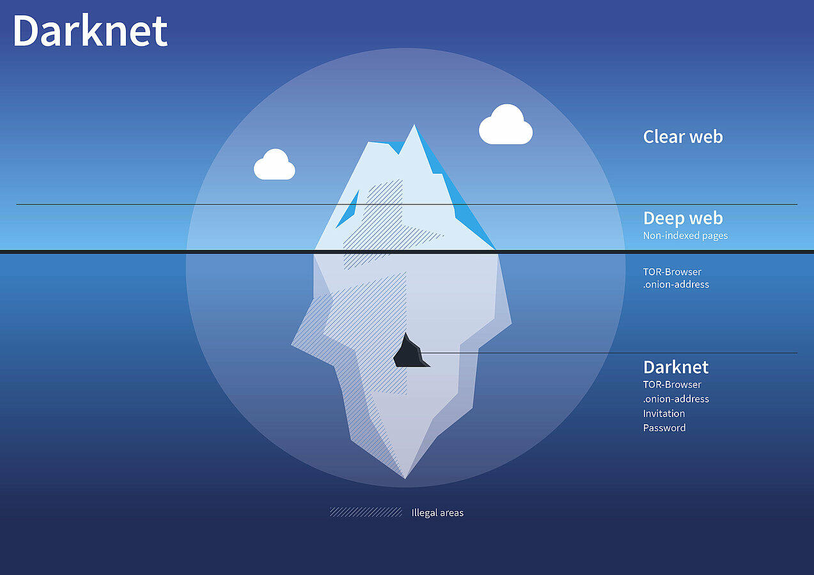

Le Darknet
Partie 1 : Quesque c'est ?
Le Dark Web est un ensemble caché de sites Internet accessibles uniquement par un navigateur spécialement conçu à cet effet. Il est utilisé pour préserver l'anonymat et la confidentialité des activités sur Internet, ce qui peut être utile aussi bien pour les applications légales que pour les applications illégales.Si certains l'utilisent pour échapper à la censure gouvernementale, d'autres s'en servent également pour mener des activités hautement illégales.

Partie 2 : Comment y accéder ?
Lorsque l'on est équipé d'un VPN et que Tor est installé sur son appareil (Windows, macOS ou Linux) on peut ensuite aller sur le Dark Web.Il est conseillé de se rendre sur un annuaire comme Hidden Wiki qui répertorie les pages web non indexées par catégorie. Les URLs sont en .onion.